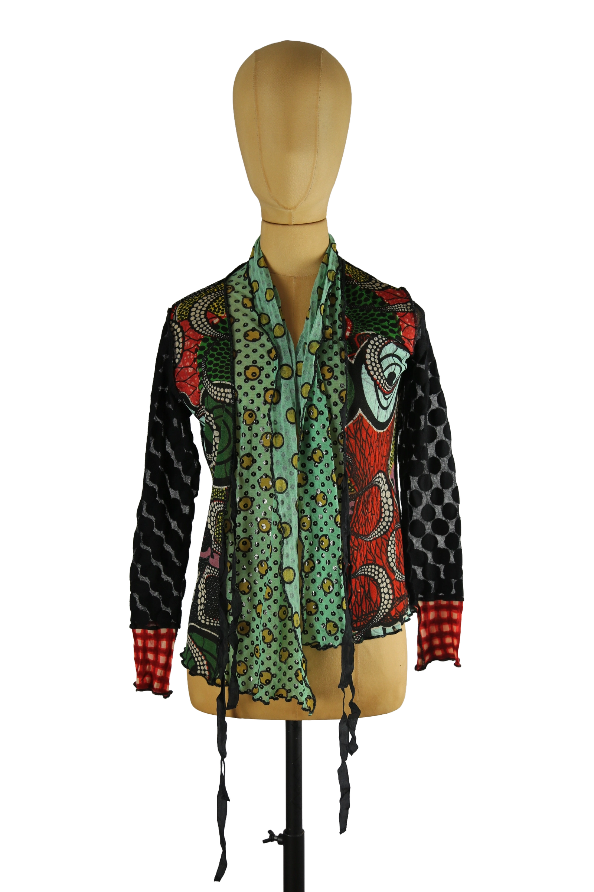

1 / 12Aus dem kuratierten Archiv von Disorder119. Diese ikonische Mesh-Bluse von Jean Paul Gaultier steht exemplarisch für die experimentelle Designsprache des Hauses. Der fein transparente Mesh-Stoff bildet die Grundlage für ein komplexes Patchwork aus grafischen Prints, Punktstrukturen und organisch anmutenden Formen in Grün-, Rot-, Schwarz- und Türkistönen. Die schmale, körpernahe Silhouette wird durch die elastische Materialität unterstützt und sorgt für eine präzise, figurbetonte Passform. Charakteristisch sind die kontrastierenden Ärmel mit unterschiedlichen Musterungen sowie die dekorativen Bänder im Frontbereich, die dem Piece eine spielerische, zugleich avantgardistische Tiefe verleihen. Ein typisches Archivstück aus der Hochphase der experimentellen JPG-Mesh-Ästhetik, vielseitig tragbar als Statement-Piece oder im Layering. Details: Marke: Jean Paul Gaultier Farbe: Multicolor Größe: M Passform: Figurbetont Verschluss: Bindebänder vorne Material: Mesh (Materialangabe laut Etikett) Herstellungsland: Nicht angegeben Fotografie & Passform: Das Kleidungsstück wurde auf unserer Standard-Schneiderpuppe fotografiert, die wir zur konsistenten Darstellung aller Kleidungsstücke verwenden. Maße der Schneiderpuppe: Brustumfang 89 cm Taillenumfang 66 cm Hüftumfang 89 cm Schulterbreite 38 cm Zustand: Guter getragener Zustand mit leichten, altersbedingten Gebrauchsspuren. Keine gravierenden Beschädigungen erkennbar. Rechtliche Hinweise: Verkauf als gebrauchtes Kleidungsstück. Die Beschreibung erfolgt nach bestem Wissen und Gewissen. Farbnuancen und Oberflächenwirkungen können aufgrund von Lichtverhältnissen bei der Fotografie sowie unterschiedlicher Bildschirmdarstellungen leicht vom Original abweichen. Disorder119 steht für sorgfältig kuratierte Designerstücke mit Fokus auf Authentizität, Qualität und zeitlose Relevanz.
Disorder119 · Kuratiertes Archiv für Designer-, Vintage- und Contemporary-Mode. Jedes Stück wird einzeln ausgewählt, fotografiert und beschrieben.